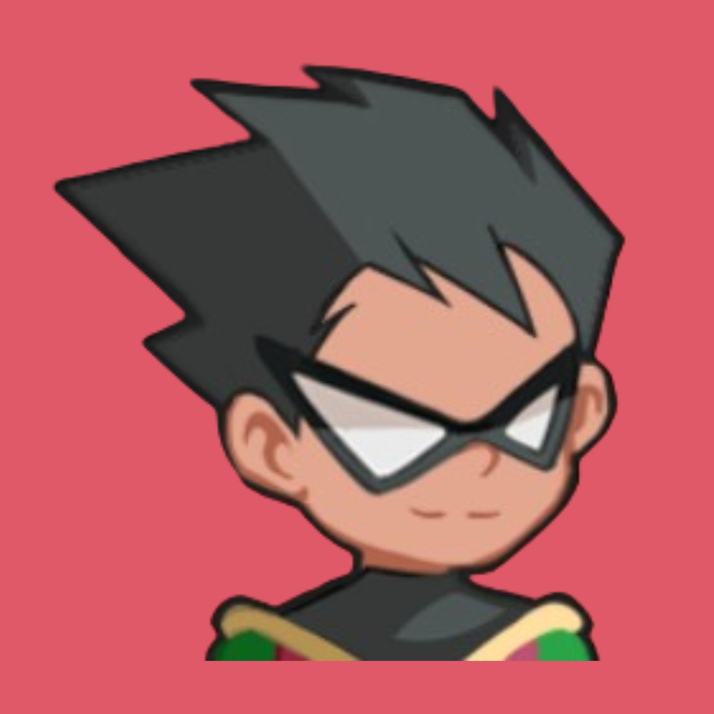
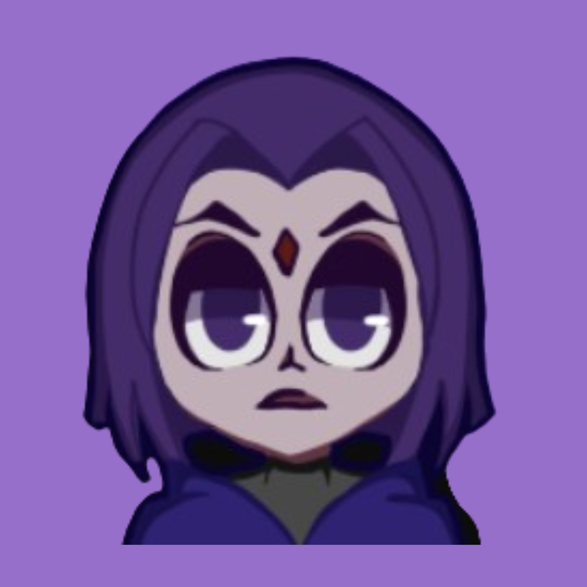
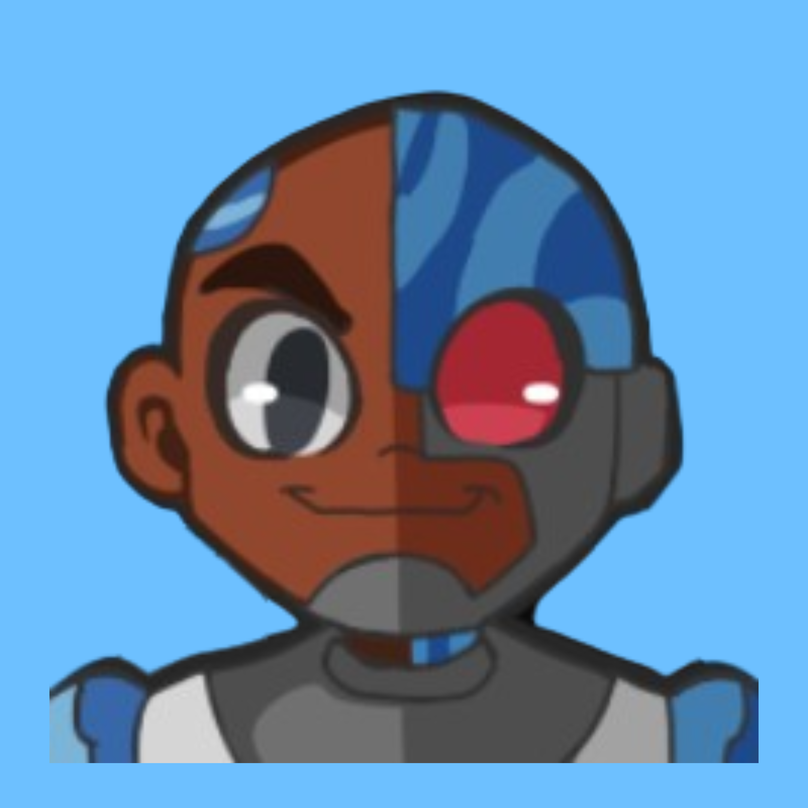

<!DOCTYPE html>
<html lang="en"></html>
<head>
    <meta charset="UTF-8">
    <meta name="viewport" content="width='device-width', initial-scale=1.0">
    <title>TEEN TITANS GO!</title>
    <link rel="stylesheet" href="pasion_tsa5.css">
</head>
<body>
    <div class="TTG-container">
<!-- 1. ROBIN -->
        <div class="item" id="robin">
            <div class="details">
                
                <div class="name-power">
                    <p class="name">Robin</p>
                    <p class="power-robin">Acrobatic Skills</p>
                </div>
            </div>
            <p class="desc">Robin is the main central character of the Teen Titans series. He is the leader and one of the five 
                founding members of the Teen Titans. Before that, he was trained by, and served as the sidekick to Batman. 
                His strict adherence to discipline and strategic thinking often contrasts with his teammates' more relaxed attitudes, 
                providing both comic relief and dramatic tension. 
                He is also Starfire's main love interest and finally becomes her boyfriend in the series' finale movie. Robin's backstory is 
                marked by tragedy—he became an orphan after witnessing his parents' death in a circus accident orchestrated by mobsters. 
                This traumatic event drives his dedication to fighting crime and seeking justice, mirroring Batman's own motivations. 
                Despite his serious demeanor, Robin has moments of vulnerability and self-doubt, particularly regarding his struggle 
                to step out of Batman's shadow and prove his independence as a hero.</p>
        </div>

<!-- 2. STAR FIRE -->       
        <div class="item" id="starfire">
            <div class="details">
                
                <div class="name-power">
                    <p class="name">Starfire</p>
                    <p class="power-starfire">Can fly at supersonic speeds</p>
                </div>
            </div>
            <p class="desc">Starfire or "Star" for short, is one of the main characters of the Teen Titans series. 
                A very cheerful and sweet, yet somewhat naive and considerably insecure, but her naivety should not be mistaken for stupidity.
                She is an alien princess from the distant world of Tamaran, and one of the five founding members of the Teen Titans. 
                She is also Robin's main love interest and finally becomes his girlfriend in the series finale movie.</p>
        </div>

<!-- 3. BEAST BOY -->
        <div class="item" id="beastboy">
            <div class="details">
                
                <div class="name-power">
                    <p class="name">Beastboy</p>
                    <p class="power-beastboy">Morph and Transform into Animals</p>
                </div>
            </div>
            <p class="desc">Beast Boy (aka "B.B.") is one of the main characters of the Teen Titans series. 
                He is a shapeshifter who possesses the ability to metamorph into any animal he chooses. 
                Beast Boy's green skin and hair are distinctive traits that stem from his past exposure to a rare disease 
                and its experimental cure. He has a well-known penchant for video games, pranks, and making others laugh, 
                though his jokes sometimes backfire, causing chaos or irritation among his teammates. Despite his goofiness, 
                Beast Boy has a big heart and shows deep loyalty to his friends. A funny and endearing trait is his constant attempts to impress Raven, 
                leading to humorous and awkward moments as he navigates his crush on her. He is a former member of the Doom Patrol and one of 
                the five founding members of the Teen Titans.</p>
        </div>
        
<!-- 4. RAVEN -->
        <div class="item" id="raven">
            <div class="details">
                
                <div class="name-power">
                    <p class="name">Raven</p>
                    <p class="power-raven">Spirtual Telekinesis</p>
                </div>
            </div>
            <p class="desc">Raven is one of the main characters of the Teen Titans series. She is the daughter of the demon Trigon and a human mother, 
                which gives her formidable powers and a complex struggle to control her darker side.
                She is a human-demon hybrid, originating from the parallel dimension of Azarath, 
                and is one of five founding members of the Teen Titans.</p>
        </div>
        
<!-- 5. CYBORG -->
        <div class="item" id="cyborg">
            <div class="details">
                
                <div class="name-power">
                    <p class="name">Cyborg</p>
                    <p class="power-cyborg">Multiversal Force Manipulation</p>
                </div> </div>
            <p class="desc">Cyborg (real name Victor Stone) or sometimes "Cy", is one of the main characters of Teen Titans. 
                He is extremely intelligent and tactical, second only to Robin in those regards, and serves as his second in command. 
                An expert in the fields of mechanical engineering, robotics, physics and computer science. Half-human, half-machine, 
                Cyborg's body was rebuilt with advanced cybernetic technology after a devastating accident, granting him incredible strength, 
                various built-in weapons, and the ability to interface with computers and other tech. 
                He is the half-cybernetic half-man, chief technological expert and one of the five founding members of the Teen Titans.
                Cyborg's friendship with Beast Boy is a highlight of the series. Their shared interests in video games, pranks, and food 
                create many funny and heartwarming scenes. Additionally, Cyborg's struggle to balance his human and machine sides adds depth to his character, 
                as he often contemplates his identity and what it means to be human.</p>
        </div>
    </div>
</body>
</html>
